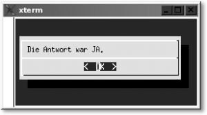
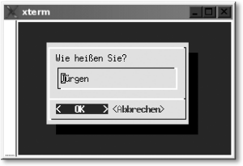
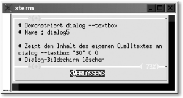
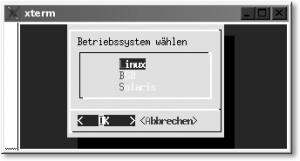
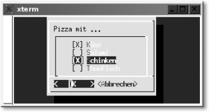
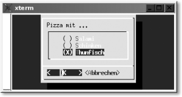
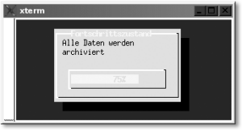
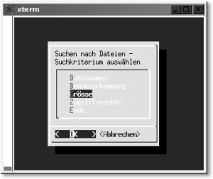

|
|
|
Nun wollen Sie sicherlich testen, ob die Ausführungen zu dialog und Xdialog stimmen und man tatsächlich nur ein (großes) »X« vor dialog stellen muss, um eine echte grafische Oberfläche zu erhalten. Ändern Sie die Zeile dialog --yesno "Möchten Sie wirklich abbrechen?" 0 0 im Script »dialog1« um in Xdialog --yesno "Möchten Sie wirklich abbrechen?" 0 0 und Sie erhalten folgendes, in Abbildung 5.4 gezeigtes Ergebnis (immer vorausgesetzt, Sie haben Xdialog installiert):
 5.8.2 Nachrichtenbox mit Bestätigung --msgbox
|
||||||||||||||||||||||||||||||||||||||||||||||||||||||||||||||||||||||||||||||||||||||||||||||||||||||||||||||||||||||||||||||||||||||||||||||||||||||||||||||||||||||||||||||||||||||||||||||||||||||||||||||||||||||||||||||||||||||||||||||||||||||||||||||||||||||||||||||||||
|
 Abbildung 5.5 Dialog --msgbox in der Praxis |
––infobox ist gleichwertig zum eben erwähnten Dialog ––msgbox, nur mit dem Unterschied, dass dieser Dialog nicht auf die Bestätigung des Benutzers wartet und somit das Shellscript im Hintergrund weiter ausgeführt wird.
[X]dialog --infobox [Text] [Höhe] [Breite]
Ein Script als Demonstration:
# Demonstriert dialog --msgbox # Name : dialog3 dialog --yesno "Möchten Sie wirklich alles löschen?" 0 0 # 0=ja; 1=nein antwort=$? # Dialog-Bildschirm löschen dialog --clear # Ausgabe auf die Konsole if [ $antwort = 0 ] then dialog --infobox "Dieser Vorgang kann ein wenig dauern" 5 50 # Hier die Kommandos zur Ausführung zum Löschen sleep 5 # ... wir warten einfach 5 Sekunden dialog --clear # Dialog-Bildschirm löschen dialog --msgbox "Done! Alle Löschvorgänge ausgeführt" 5 50 fi # Bildschirm löschen clear
In einer Text-Eingabezeile mit ––inputbox können Eingaben des Benutzers erfolgen. Optional kann man hier auch einen Text vorbelegen. Die Ausgabe erfolgt anschließend auf die Standardfehlerausgabe.
[X]dialog --inputbox [Text] [Höhe] [Breite] [[Vorgabetext]]
Ein Script zu Demonstrationszwecken:
# Demonstriert dialog --inputbox # Name : dialog4 name=`dialog --inputbox "Wie heißen Sie?" 0 0 "Jürgen" \ 3>&1 1>&2 2>&3` # Dialog-Bildschirm löschen dialog --clear dialog --msgbox "Hallo $name, Willkommen bei $HOST!" 5 50 # Bildschirm löschen clear
Das Script bei der Ausführung (siehe Abbildung 5.6):
|
 Abbildung 5.6 Dialog --inputbox in der Praxis |
Vielleicht wundern Sie sich im Script bei der Verarbeitung des Dialog-Kommandos über den Zusatz 3>&1 1>&2 2>&3 in der Kommando-Substitution. Dies ist einer der Nachteile von dialog, weil hierbei das Ergebnis immer auf die Standardfehlerausgabe statt auf die Standardausgabe erfolgt. Und um die Dialogausgabe zur weiteren Verarbeitung in eine Variable zu schreiben, müssen Sie ebenso vorgehen (siehe auch Abschnitt 5.5).
Mit diesem Dialog kann der Inhalt einer als Parameter übergebenen Datei angezeigt werden. Enthält der Text mehr Zeilen oder Spalten als angezeigt werden können, kann der darzustellende Text mit den Pfeiltasten ((?) (?) (?) (?)) gescrollt werden.
[X]dialog --textbox [Datei] [Höhe] [Breite]
Ein Script zur Demonstration:
# Demonstriert dialog --textbox # Name : dialog5 # Zeigt den Inhalt des eigenen Quelltextes an dialog --textbox "$0" 0 0 # Dialog-Bildschirm löschen dialog --clear # Bildschirm löschen clear
Das Script bei der Ausführung (siehe Abbildung 5.7):
|
 Abbildung 5.7 Dialog --textbox in der Praxis |
Mit diesem Dialog verfügen Sie über eine echte Alternative zu select. Hierbei wird eine Liste von Einträgen (ggf. mit Scrollbalken) angezeigt, von denen jeweils einer ausgewählt werden kann. Der entsprechende Eintrag (dessen Kürzel) wird dann auf den Standardfehlerkanal zurückgegeben, ansonsten – bei Abbruch – eine leere Zeichenkette.
[X]dialog --menu [Text] [Höhe] [Breite] [Menühöhe] [Tag1] \ [Eintrag1] ...
Der »Text« wird oberhalb der Auswahlbox gesetzt. »Breite« und »Höhe« sprechen für sich, wobei die »Breite« ein etwas genaueres Augenmerk verlangt, da längere Menüeinträge einfach abgeschnitten werden. Haben Sie eine Auswahl getroffen, wird durch Betätigen von »OK« der selektierte Eintrag zurückgegeben.
Ein Script zur Demonstration:
# Demonstriert dialog --menu # Name : dialog6 os=`dialog --menu "Betriebssystem wählen" 0 0 0 \ "Linux" "" "BSD" "" "Solaris" "" 3>&1 1>&2 2>&3` dialog --clear dialog --yesno "Bestätigen Sie Ihre Auswahl: $os" 0 0 dialog --clear clear
Das Script bei der Ausführung (siehe Abbildung 5.8):
|
 Abbildung 5.8 Dialog --menu in der Praxis |
Hierbei handelt es sich um eine Liste von Einträgen, von denen Sie beliebig viele markieren (ankreuzen) können. Es werden – wie schon bei –menu – die Kürzel aller ausgewählten Einträge auf den Standardfehlerkanal zurückgegeben.
[X]dialog --checklist [Text] [Höhe] [Breite] [Listenhöhe] \ [Tag1] [Eintrag1] [Status1] ...
Auch hier wird der »Text« wieder oberhalb der Auswahlliste ausgegeben. Die »Höhe«, »Breite« und »Listenhöhe« sind eigentlich wieder selbsterklärend. Bei ihnen sollte man stets auf ein vernünftiges Maß achten. Wenn das erste Zeichen der Tags eindeutig ist, kann auch mit einem Tastendruck des entsprechenden Zeichens direkt dorthin gesprungen werden. Als »Status« können Sie den Eintrag als markiert »on« oder als deaktiviert »off« voreinstellen.
Das folgende Script soll Ihnen die Auswahlliste demonstrieren:
# Demonstriert dialog --checklist # Name : dialog7 pizza=`dialog --checklist "Pizza mit ..." 0 0 4 \ Käse "" on\ Salami "" off\ Schinken "" off\ Thunfisch "" off 3>&1 1>&2 2>&3` dialog --clear clear echo "Ihre Bestellung: Pizza mit $pizza"
Das Script bei der Ausführung (siehe Abbildung 5.9):
|
 Abbildung 5.9 Dialog --checklist in der Praxis |
Im Unterschied zu ––checklist kann hier aus einer Liste von Einträgen nur eine Option mit der Leertaste markiert werden. Ansonsten entspricht dieser Dialog exakt dem von ––checklist.
[X]dialog --radiolist [Text] [Höhe] [Breite] [Listenhöhe] \ [Tag1] [Eintrag1] [Status1] ...
Ein Script zur Demonstration:
# Demonstriert dialog --radiolist # Name : dialog8 pizza=`dialog --radiolist "Pizza mit ..." 0 0 3 \ Salami "" off\ Schinken "" off\ Thunfisch "" off 3>&1 1>&2 2>&3` dialog --clear clear echo "Ihre Bestellung: Pizza mit $pizza"
Das Script bei der Ausführung (siehe Abbildung 5.10):
|
 Abbildung 5.10 Dialog --radiolist in der Praxis |
Hiermit können Sie einen Fortschrittszustand einbauen, um etwa anzuzeigen, wie weit der Prozess des Kopierens von Dateien schon abgeschlossen ist.
[X]dialog --gauge [Text] [Höhe] [Breite] [Prozent]
Der Text wird wieder oberhalb des Fortschrittsbalkens angezeigt. Der Startwert des Balkens wird über Prozent angegeben. Um die Anzeige zu aktualisieren, erwartet dieser Dialog weitere Werte aus der Standardeingabe. Erst wenn hierbei auf EOF gestoßen wurde, ist gauge fertig. Der Fortschrittszustand ist meiner Meinung nach ohnehin nie etwas Genaues, sondern dient wohl eher dazu, dem Anwender zu zeigen, dass auf dem System noch etwas passiert. ;-)
Ein Script zur Demonstration:
# Demonstriert dialog --gauge # Name : dialog9 DIALOG=dialog ( echo "10" ; sleep 1 echo "XXX" ; echo "Alle Daten werden gesichert"; echo "XXX" echo "20" ; sleep 1 echo "50" ; sleep 1 echo "XXX" ; echo "Alle Daten werden archiviert"; echo "XXX" echo "75" ; sleep 1 echo "XXX" ; echo "Daten werden ins Webverzeichnis hochgeladen"; echo "XXX" echo "100" ; sleep 3 ) | $DIALOG --title "Fortschrittszustand" --gauge "Starte Backup-Script" 8 30 $DIALOG --clear $DIALOG --msgbox "Arbeit erfolgreich beendet ..." 0 0 $DIALOG --clear clear
Das Script bei der Ausführung (siehe Abbildung 5.11):
|
 Abbildung 5.11 Dialog --gauge in der Praxis |
|
Tipp Beim letzten Script ist mir erst eingefallen, dass es recht umständlich ist, dialog immer in Xdialog umzubenennen. Eine globale Variable eignet sich viel besser. Soll Ihr Script für die Konsole sein, dann schreiben Sie DIALOG=dialog, für einen Dialog mit dem X-Server DIALOG=Xdialog. Hinweis Für Scripts, die als root ausgeführt werden, sollte man möglichst kein Xdialog verwenden, da sich root nur mit dem X-Server verbinden kann, wenn der Server freigegeben wurde oder root grafisch eingeloggt ist, was man beides vermeiden sollte. |
Es gibt noch ein paar Dialoge, mit denen Sie das Aussehen und die Ausgabe beeinflussen können. Tabelle 5.10 bietet eine kurze Übersicht.
| Option | Erläuterung |
| ––title | Eine Titelzeile für einen Dialog festlegen (Beschriftung für den oberen Rand) |
| ––backtitle | Eine Titelzeile am Bildschirmrand festlegen (hierbei wird häufig der Scriptname verwendet, der zum jeweiligen Dialog gehört) |
| ––clear | Dialog-Bildschirm löschen |
dialog und Xdialog lassen sich sehr vielseitig und eigentlich überall verwenden, sodass ein Beispiel immer recht wenig Sinn ergibt. Trotzdem will ich Ihnen ein kleines Beispiel zeigen. Es soll der Befehl find verwendet werden, und zwar so, dass auch der unbedarfte Linux-UNIX-User sofort an sein Ziel kommt. Im Beispiel wird ein Menü verwendet, wobei der User Dateien nach Namen, User-Kennung, Größe oder Zugriffsrechten suchen kann. In der anschließenden Eingabebox können Sie das Suchmuster festlegen und am Ende wird find aktiv. Zwar könnte man die Ausgabe von find auch in eine Textbox von dialog packen, aber bei einer etwas längeren Ausgabe macht die Dialogbox schlapp und gibt einen Fehler aus wie: »Die Argumentliste ist zu lang«. Hier das Beispielscript:
# Demonstriert dialog
# Name : dialog10
myfind=`dialog --menu \
"Suchen nach Dateien – Suchkriterium auswählen" 0 0 0 \
"Dateinamen" "" \
"Benutzerkennung" "" \
"Grösse" "" \
"Zugriffsrechte" "" \
"Ende" "" 3>&1 1>&2 2>&3`
dialog --clear
case "$myfind" in
Dateinamen)
search=`dialog --inputbox \
"Dateinamen eingeben" 0 0 "" 3>&1 1>&2 2>&3`
command="-name $search" ;;
Benutzerkennung)
kennung=`dialog --inputbox \
"Benutzerkennung eingeben" 0 0 "" 3>&1 1>&2 2>&3`
command="-user $kennung" ;;
Grösse)
bsize=`dialog --inputbox \
"Dateigrösse (in block size) eingeben" 0 0 "" \
3>&1 1>&2 2>&3`
command="-size $bsize" ;;
Zugriffsrechte)
permission=`dialog --inputbox \
"Zugriffsrechte (oktal) eingeben" 0 0 "" 3>&1 1>&2 2>&3`
command="-perm $permission" ;;
Ende) dialog --clear; clear; exit 0 ;;
esac
find /home $command -print 2>/dev/null
Das Script bei der Ausführung (siehe Abbildung 5.12):
|
 Abbildung 5.12 Ein kleines Beispiel zum Abschnitt dialog |
Sicherlich ließe sich zu dialog und insbesondere Xdialog noch einiges mehr sagen, aber die Basis haben Sie gelegt. Xdialog bietet Ihnen natürlich noch einige Widgets mehr an. Wenn Sie sich das Quellcode-Paket herunterladen, finden Sie im Verzeichnis samples eine Menge interessanter Scripts, die Ihnen zusätzliche Funktionen von Xdialog demonstrieren.
Eine weitere, sehr verbreitete Dialog-Schnittstelle ist lxdialog. Sie ist eine modifizierte Version von dialog und speziell für die Konfiguration des Kernels ausgelegt. lxdialog wird also vorwiegend von Kernel-Entwicklern eingesetzt und unterstützt im Gegensatz zu dialog auch Untermenüs und Abhängigkeiten zwischen Inhalten und einer Vorauswahl anderer Punkte. Leider ist lxdialog sehr schlecht dokumentiert, sodass schon viel Motivation dazugehört, sich damit auseinander zu setzen.
Wie hat Ihnen das <openbook> gefallen? Wir freuen uns immer über Ihre freundlichen und kritischen Rückmeldungen.
>> Zum Feedback-Formular| << zurück |
|
||||||||||||
|
||||||||||||
|
||||||||||||
Copyright © Rheinwerk Verlag GmbH 2005
Für Ihren privaten Gebrauch dürfen Sie die Online-Version natürlich ausdrucken. Ansonsten unterliegt das <openbook> denselben Bestimmungen, wie die gebundene Ausgabe: Das Werk einschließlich aller seiner Teile ist urheberrechtlich geschützt. Alle Rechte vorbehalten einschließlich der Vervielfältigung, Übersetzung, Mikroverfilmung sowie Einspeicherung und Verarbeitung in elektronischen Systemen.


 bestellen
bestellen